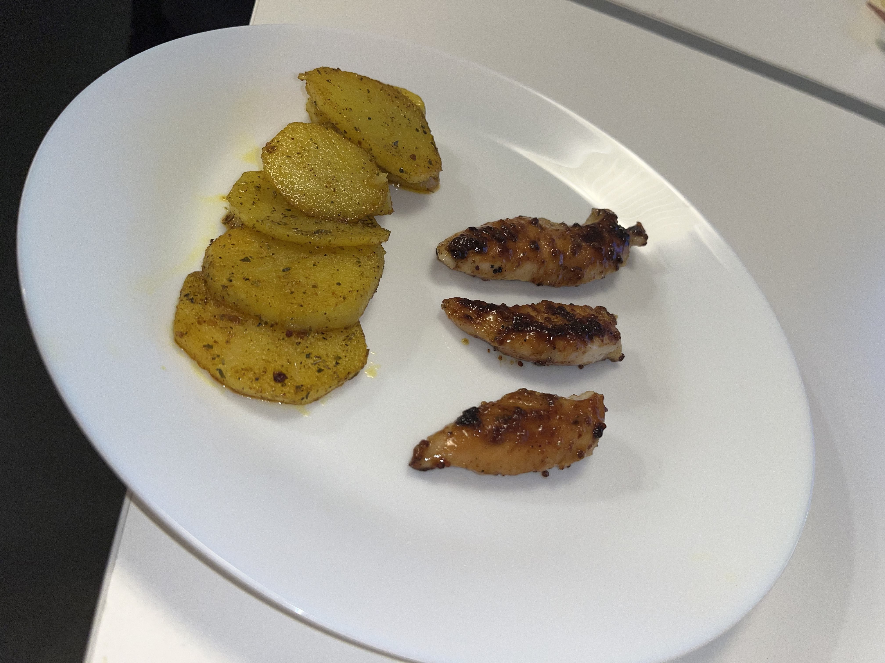

Honey Mustard Chicken

Ingrédients :
- Epices
- Sel
- Poivre
- Ail en poudre
- Origan
- 150g de poulet en fines tranches
- Moutarde de Dijon
- Jus de citron
- Miel
- Huile d'olive
Préparation :
- Mélangez deux cuillères à soupes de moutarde de Dijon, une cuillère à soupe de miel, les épices, de l'huile d'olive et du jus de citron comme bon vous semble. Votre sauce est déjà prête.
- Mettez les filets de poulet dans la sauce et laissez reposer au réfrigérateur pendant 1-2h (en vrai vous pouvez très bien laissez mariner 15-20 minutes ça reste très bon).
- Cuisez le poulet dans une poêle à feu doux. Pensez à régulièrement retourner le poulet; la sauce aura tendance à vite cuire et donc potentiellement cramer mais si vous réduisez le feu et retournez tout se passera bien.
- Pour la sauce, mélangez 4 cuillères à café de mayonnaise avec 3 cuillères à café de crème fraîche et 1 de moutarde de Dijon, rajoutez les épices et mélangez.
- Au bout d'une quinzaine de minutes, votre poulet sera prêt à être dégusté avec préférablement (mais ce n'est que mon avis) des pommes de terre sautées.
Mon avis :
Déjà, petit disclaimer, il n'y a que 100g du poulet sur la photo (j'ai essayé de faire une photo stylée mdr). Sinon, c'est une recette très facile à faire et j'avoue que quand j'ai fait la sauce pour la première fois j'étais vraiment hésitante. Au final le mélange s'est avéré être un pur délice, surtout avec les pommes de terre sautées, ça rend vraiment bien (j'ai ma recette de pommes de terre sautées mais vu que j'utilise cet accompagnment avec beaucoup de choses alors j'ai pas mis la recette ici. Peut-être sera-t-elle un jour disponible sur le site :)